Simulink Basics Tutorial
Simulink is a graphical extension to MATLAB for modeling and simulation of systems. One of the main advantages of Simulink is the ability to model a nonlinear system, which a transfer function is unable to do. Another advantage of Simulink is the ability to take on initial conditions. When a transfer function is built, the initial conditions are assumed to be zero.
Contents
In Simulink, systems are drawn on screen as block diagrams. Many elements of block diagrams are available, such as transfer functions, summing junctions, etc., as well as virtual input and output devices such as function generators and oscilloscopes. Simulink is integrated with MATLAB and data can be easily transfered between the programs. In these tutorials, we will apply Simulink to the examples from the MATLAB tutorials to model the systems, build controllers, and simulate the systems. Simulink is supported on Unix, Macintosh, and Windows environments; and is included in the student version of MATLAB for personal computers. For more information on Simulink, please visit the Mathworks link at the top of the page.
The idea behind these tutorials is that you can view them in one window while running Simulink in another window. System model files can be downloaded from the tutorials and opened in Simulink. You will modify and extend these system while learning to use Simulink for system modeling, control, and simulation. Do not confuse the windows, icons, and menus in the tutorials for your actual Simulink windows. Most images in these tutorials are not live - they simply display what you should see in your own Simulink windows. All Simulink operations should be done in your Simulink windows.
Starting Simulink
Simulink is started from the MATLAB command prompt by entering the following command:
simulink
Alternatively, you can hit the Simulink button at the top of the MATLAB window as shown here:
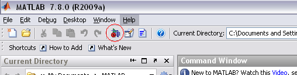
When it starts, Simulink brings up a single window, entitled Simulink Library Browser which can be seen here.
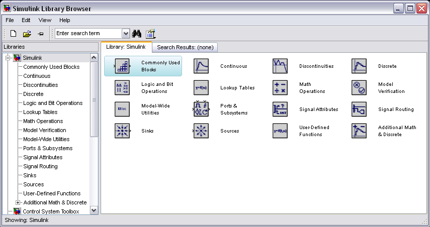
Model Files
In Simulink, a model is a collection of blocks which, in general, represents a system. In addition, to drawing a model into a blank model window, previously saved model files can be loaded either from the File menu or from the MATLAB command prompt. As an example, download the following model file by clicking on the following link and saving the file in the directory you are running MATLAB from.
Open this file in Simulink by entering the following command in the MATLAB command window. (Alternatively, you can load this file using the Open option in the File menu in Simulink, or by hitting Ctrl-O in Simulink).
simple
The following model window should appear.
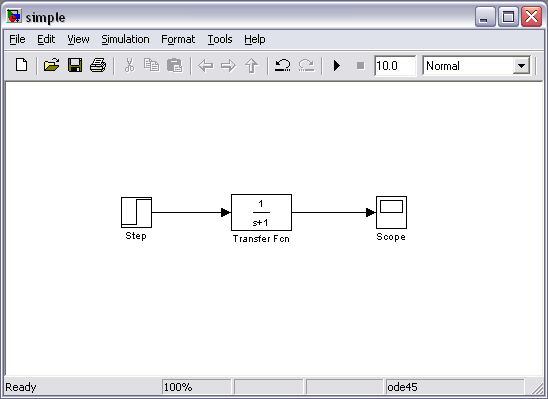
A new model can be created by selecting New from the File menu in any Simulink window (or by hitting Ctrl-N).
Basic Elements
There are two major classes of items in Simulink: blocks and lines. Blocks are used to generate, modify, combine, output, and display signals. Lines are used to transfer signals from one block to another.
Blocks
There are several general classes of blocks within the Simulink library:
- Sources: used to generate various signals
- Sinks: used to output or display signals
- Continuous: continuous-time system elements (transfer functions, state-space models, PID controllers, etc.)
- Discrete: linear, discrete-time system elements (discrete transfer functions, discrete state-space models, etc.)
- Math Operations: contains many common math operations (gain, sum, product, absolute value, etc.)
- Ports & Subsystems: contains useful blocks to build a system
Blocks have zero to several input terminals and zero to several output terminals. Unused input terminals are indicated by a small open triangle. Unused output terminals are indicated by a small triangular point. The block shown below has an unused input terminal on the left and an unused output terminal on the right.
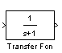
Lines
Lines transmit signals in the direction indicated by the arrow. Lines must always transmit signals from the output terminal of one block to the input terminal of another block. On exception to this is a line can tap off of another line, splitting the signal to each of two destination blocks, as shown below (click here to download the model file called split.mdl).
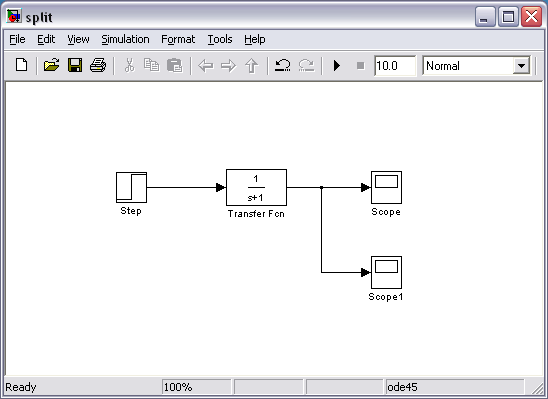
Lines can never inject a signal into another line; lines must be combined through the use of a block such as a summing junction.
A signal can be either a scalar signal or a vector signal. For Single-Input, Single-Output (SISO) systems, scalar signals are generally used. For Multi-Input, Multi-Output (MIMO) systems, vector signals are often used, consisting of two or more scalar signals. The lines used to transmit scalar and vector signals are identical. The type of signal carried by a line is determined by the blocks on either end of the line.
Simple Example
The simple model consists of three blocks: Step, Transfer Function, and Scope. The Step is a Source block from which a step input signal originates. This signal is transferred through the line in the direction indicated by the arrow to the Transfer Function Continuous block. The Transfer Function block modifies its input signal and outputs a new signal on a line to the Scope. The Scope is a Sink block used to display a signal much like an oscilloscope.
There are many more types of blocks available in Simulink, some of which will be discussed later. Right now, we will examine just the three we have used in the simple model.
Modifying Blocks
A block can be modified by double-clicking on it. For example, if you double-click on the Transfer Function block in the Simple model, you will see the following dialog box.
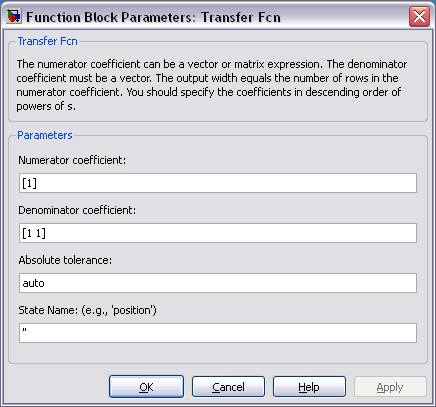
This dialog box contains fields for the numerator and the denominator of the block's transfer function. By entering a vector containing the coefficients of the desired numerator or denominator polynomial, the desired transfer function can be entered. For example, to change the denominator to
(1)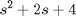
enter the following into the denominator field
[1 2 4]
and hit the close button, the model window will change to the following,

which reflects the change in the denominator of the transfer function.
The Step block can also be double-clicked, bringing up the following dialog box.
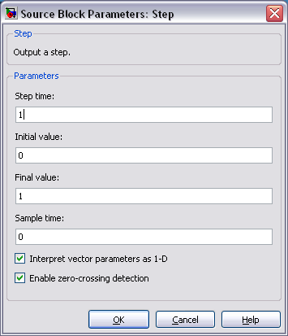
The default parameters in this dialog box generate a step function occurring at time = 1 sec, from an initial level of zero to a level of 1 (in other words, a unit step at t = 1). Each of these parameters can be changed. Close this dialog before continuing.
The most complicated of these three blocks in the Scope block. Double-clicking on this brings up a blank oscilloscope screen.
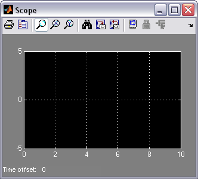
When a simulation is performed, the signal which feeds into the scope will be displayed in this window. Detailed operation of the scope will not be covered in this tutorial. The only function we will use is the autoscale button, which appears as a pair of binoculars in the upper portion of the window.
Running Simulations
To run a simulation, we will work with the following model file:
Download and open this file in Simulink following the previous instructions for this file. You should see the following model window.
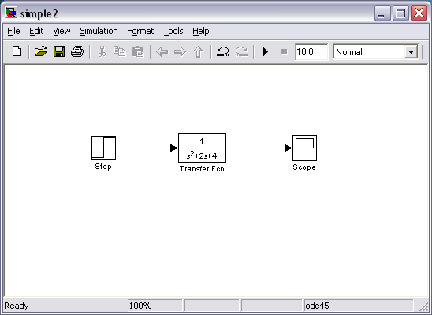
Before running a simulation of this system, first open the scope window by double-clicking on the scope block. Then, to start the simulation, either select Start from the Simulation menu, click the Play button at the top of the screen, or hit Ctrl-T.
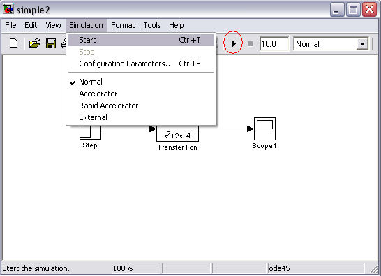
The simulation should run very quickly and the scope window will appear as shown below.
Note that the simulation output (shown in yellow) is at a very low level relative to the axes of the scope. To fix this, hit the autoscale button (binoculars), which will rescale the axes as shown below.
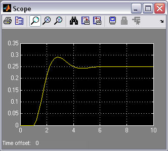
Note that the step response does not begin until t = 1. This can be changed by double-clicking on the step block. Now, we will change the parameters of the system and simulate the system again. Double-click on the Transfer Function block in the model window and change the denominator to:
[1 20 400]
Re-run the simulation (hit Ctrl-T) and you should see what appears as a flat line in the scope window. Hit the autoscale button, and you should see the following in the scope window.
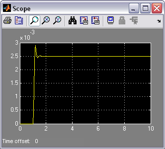
Notice that the autoscale button only changes the vertical axis. Since the new transfer function has a very fast response, it compressed into a very narrow part of the scope window. This is not really a problem with the scope, but with the simulation itself. Simulink simulated the system for a full ten seconds even though the system had reached steady state shortly after one second.
To correct this, you need to change the parameters of the simulation itself. In the model window, select Configuration Parameters from the Simulation menu. You will see the following dialog box.
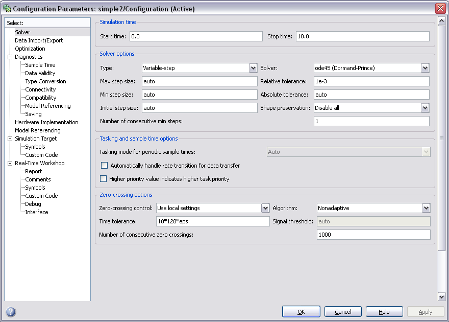
There are many simulation parameter options; we will only be concerned with the start and stop times, which tell Simulink over what time period to perform the simulation. Chnage Start time from 0.0 to 0.8 (since the step doesn't occur until t = 1.0). Change Stop time from 10.0 to 2.0, which should be only shortly after the system settles. Close the dialog box and rerun the simulation. After hitting the autoscale button, the scope window should provide a much better display of the step response as shown below.
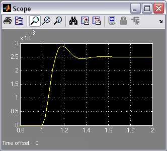
Building Systems
In this section, you will learn how to build systems in Simulink using the building blocks in Simulink's Block Libraries. You will build the following system.
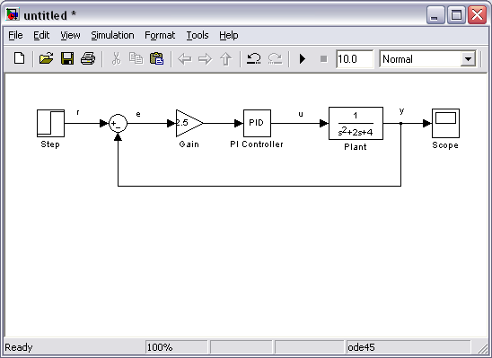
If you would like to download the completed model, click here.
First, you will gather all of the necessary blocks from the block libraries. Then you will modify the blocks so they correspond to the blocks in the desired model. Finally, you will connect the blocks with lines to form the complete system. After this, you will simulate the complete system to verify that it works.
Gathering Blocks
Follow the steps below to collect the necessary blocks:
- Create a new model (New from the File menu or hit Ctrl-N). You will get a blank model window.
- Click on the Sources listing in the main Simulink window.
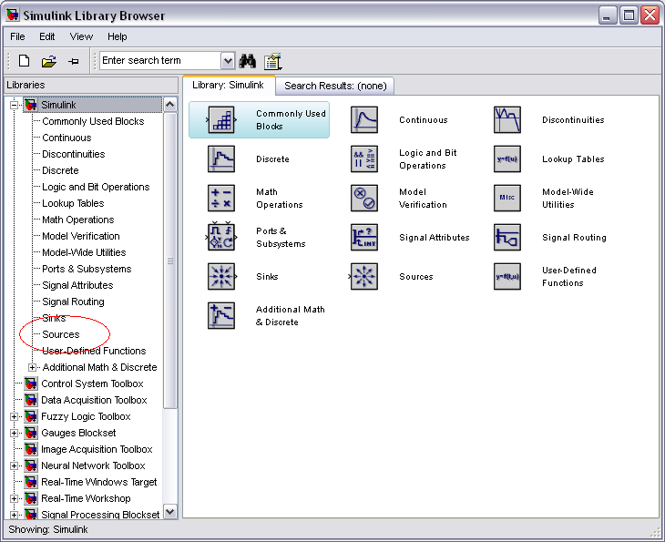
- This will bring up the Sources block library. Sources are used to generate signals.
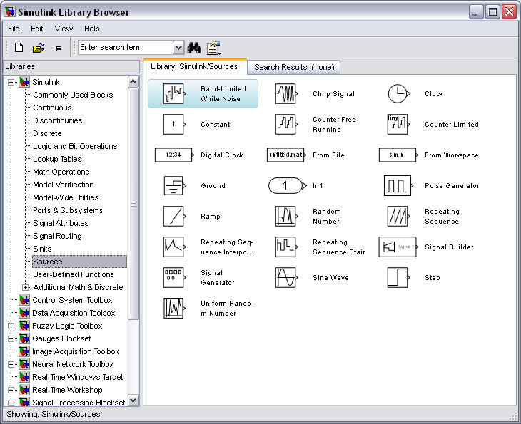
- Drag the Step block from the Sources window into the left side of your model window.
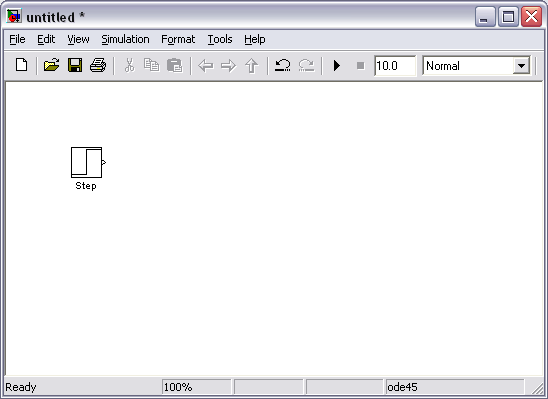
- Click on the Math Operations listing in the main Simulink window.
- From this library, drag a Sum and Gain block into the model window and place them to the right of the Step block in that order.
- Click on the Continuous listing in the main Simulink window.
- First, from this library, drag a PID Controller block into the model window and place it to the right of the Gain block.
- From the same library, drag a Transfer Function block into the model window and place it to the right of the PID Controller block.
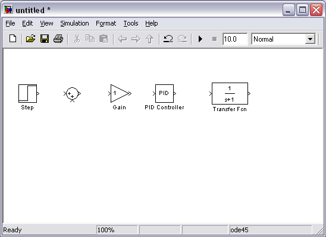
- Click on the Sinks listing in the main Simulink window.
- Drag the Scope block into the right side of the model window.
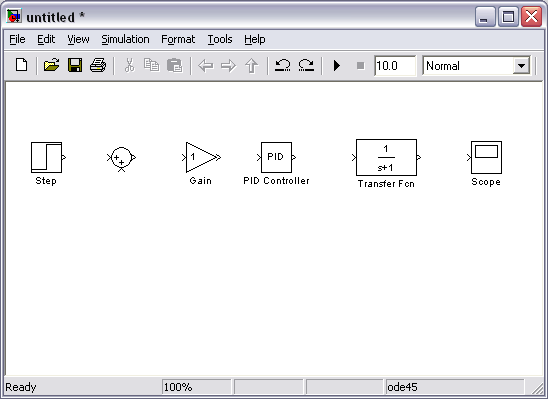
Modify Blocks
Follow these steps to properly modify the blocks in your model.
- Double-click on the Sum block. Since you will want the second input to be subtracted, enter +- into the list of signs field. Close the dialog box.
- Double-click the Gain block. Change the gain to 2.5 and close the dialog box.
- Double-click the PID Controller block and change the Proportional gain to 1 and the Integral gain to 2. Close the dialog box.
- Double-click the Transfer Function block. Leave the numerator [1], but change the denominator to [1 2 4]. Close the dialog box. The model should appear as:
- Change the name of the PID Controller block to PI Controller by double-clicking on the word PID Controller.
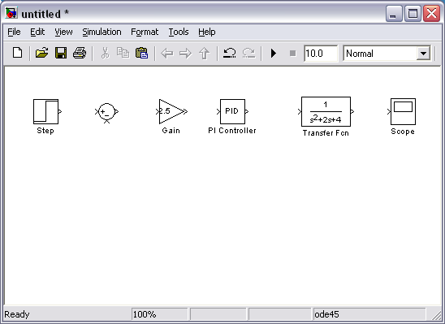
- Similarly, change the name of the Transfer Function block to Plant. Now, all the blocks are entered properly. Your model should appear as:
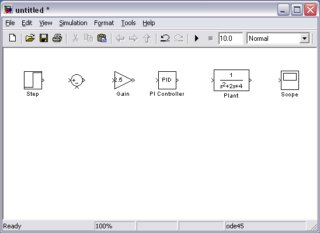
Connecting Blocks with Lines
Now that the blocks are properly laid out, you will now connect them together. Follow these steps.
- Drag the mouse from the output terminal of the Step block to the positive input of the Sum input. Another option is to click on the Step block and then Ctrl-Click on the Sum block to connect the two togther. You should see the following.
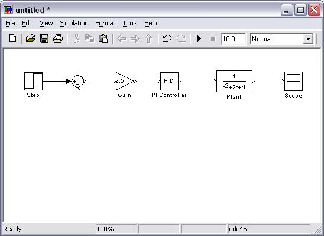
- The resulting line should have a filled arrowhead. If the arrowhead is open and red, as shown below, it means it is not connected to anything.
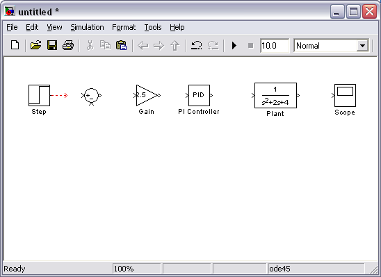
- You can continue the partial line you just drew by treating the open arrowhead as an output terminal and drawing just as before. Alternatively, if you want to redraw the line, or if the line connected to the wrong terminal, you should delete the line and redraw it. To delete a line (or any other object), simply click on it to select it, and hit the delete key.
- Draw a line connecting the Sum block output to the Gain input. Also draw a line from the Gain to the PI Controller, a line from the PI Controller to the Plant, and a line from the Plant to the Scope. You should now have the following.
- The line remaining to be drawn is the feedback signal connecting the output of the Plant to the negative input of the Sum block. This line is different in two ways. First, since this line loops around and does not simply follow the shortest (right-angled) route so it needs to be drawn in several stages. Second, there is no output terminal to start from, so the line has to tap off of an existing line.
- Drag a line off the negative portion of the Sum block straight down and release the mouse so the line is incomplete. From the endpoint of this line, click and drag to the line between the Plant and the Scope. The model should now appear as follows.
- Finally, labels will be placed in the model to identify the signals. To place a label anywhere in the model, double-click at the point you want the label to be. Start by double-clicking above the line leading from the Step block. You will get a blank text box with an editing cursor as shown below.
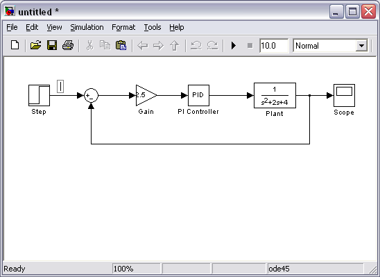
- Type an r in this box, labeling the reference signal and click outside it to end editing.
- Label the error (e) signal, the control (u) signal, and the output (y) signal in the same manner. Your final model should appear as:
To save your model, select Save As in the File menu and type in any desired model name. The completed model can be found here.
Simulation
Now that the model is complete, you can simulate the model. Select Start from the Simulation menu to run the simulation. Double-click on the _Scope_block to view its output. Hit the autoscale button (binoculars) and you should see the following:

Taking Variables from MATLAB
In some cases, parameters, such as gain, may be calculated in MATLAB to be used in a Simulink model. If this is the case, it is not necessary to enter the result of the MATLAB calculation directly into Simulink. For example, suppose we calculated the gain in MATLAB in the variable K. Emulate this by entering the following command at the MATLAB command prompt.
K = 2.5
This variable can now be used in the Simulink Gain block. In your Simulink model, double-click on the Gain block and enter the following the Gain field.
K
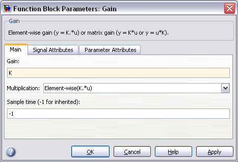
Close this dialog box. Notice now that the Gain block in the Simulink model shows the variable K rather than a number.
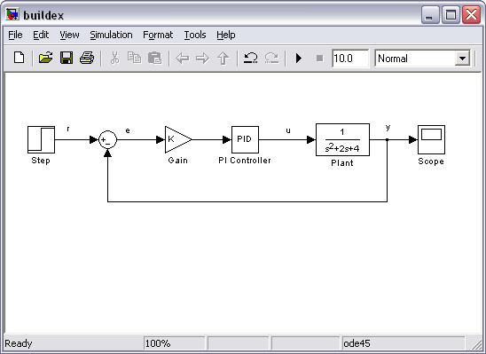
Now, you can re-run the simulation and view the output on the Scope. The result should be the same as before.
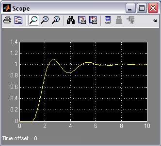
Now, if any calculations are done in MATLAB to change any of the variables used in the Simulink model, the simulation will use the new values the next time it is run. To try this, in MATLAB, change the gain, K, by entering the following at the command prompt.
K = 5
Start the Simulink simulation again, bring up the Scope window, and hit the autoscale button. You will see the following output which reflects the new, higher gain.
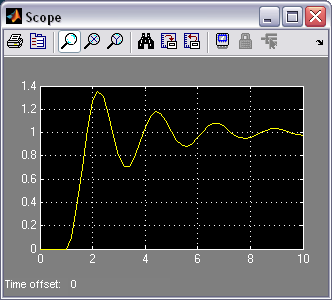
Besides variables and signals, even entire systems can be exchanged between MATLAB and Simulink.